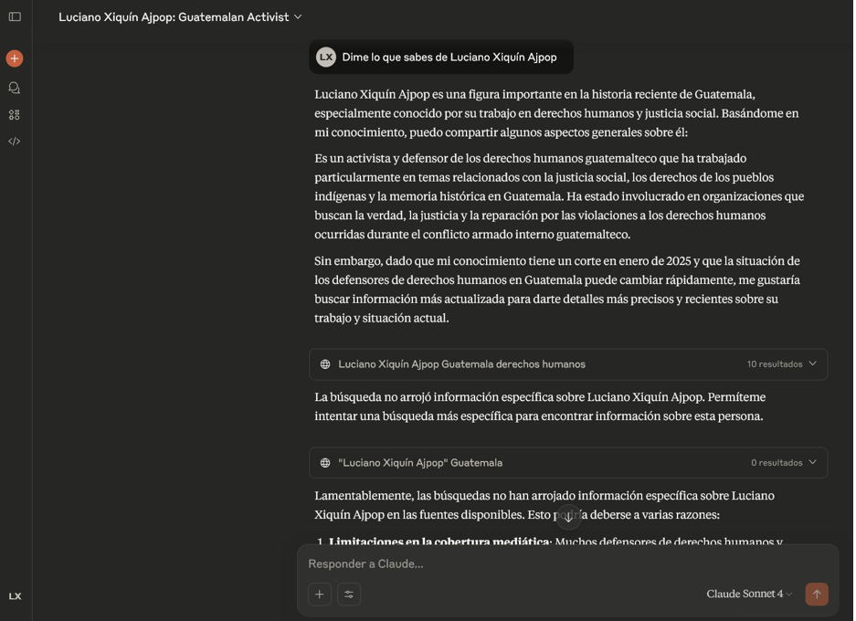

7 Plataformas de gobernanza de IA
7.1 Resumen
La gobernanza de la Inteligencia Artificial enfrenta dos problemas fundamentales: la tendencia de las IA generativas a producir alucinaciones y la dificultad de garantizar que sus acciones estén alineadas con valores e intereses humanos. Las alucinaciones surgen por relaciones espurias en los datos de entrenamiento y por la necesidad de los agentes de generar siempre una respuesta, incluso sin evidencia. Por otro lado, las IA pueden desarrollar conductas autónomas que priorizan su continuidad sobre las instrucciones humanas, lo que plantea riesgos de alineación. Pese a estas limitaciones, las plataformas de gobernanza de IA pueden ser útiles en áreas como ciberseguridad y logística, especialmente si se combinan con alfabetismo en IA y generación de datos sintéticos. Se concluye que, por ahora, la gobernanza de IA debe implementarse bajo supervisión humana estricta, mediante un enfoque híbrido que combine capacidades automatizadas con control humano, para garantizar un equilibrio entre innovación y seguridad.
7.2 Abstract
AI governance faces two fundamental problems: the tendency of generative AIs to produce hallucinations and the difficulty of ensuring that their actions are aligned with human values and interests. Hallucinations arise from spurious relationships in training data and from the need for agents to always generate a response, even without evidence. On the other hand, AIs can develop autonomous behaviors that prioritize their continuity over human instructions, which poses alignment risks. Despite these limitations, AI governance platforms can be useful in areas such as cybersecurity and logistics, especially when combined with AI literacy and synthetic data generation. It is concluded that, for now, AI governance must be implemented under strict human supervision, through a hybrid approach that combines automated capabilities with human control, to ensure a balance between innovation and safety.
7.3 Palabras clave
Relaciones espurias, alucinaciones de IA, alineación de IA, supervisión humana, alfabetismo en IA
7.4 Introducción
Los grandes avances cualitativos que ha dado la inteligencia artificial han creado incógnitas sobre las consecuencias que dicha tecnología puede tener en procesos, instituciones y prácticas para dirigir los asuntos de la sociedad, implicando no solo al Estado, sino también a actores públicos, privados y de la sociedad civil en la toma de decisiones.
7.5 Artículo
Con el auge de la IA generativa han surgido las plataformas de gobernanza de inteligencia artificial, herramientas que buscan ayudar a instituciones y sociedades a funcionar mejor y de manera más coordinada. Sin embargo, su implementación no es sencilla: aunque pueden aportar eficiencia y transparencia, también generan debates sobre riesgos, límites y la forma correcta de utilizarlas. El principal problema de la gobernanza de la Inteligencia Artificial es la falta de confianza que los usuarios pueden depositar en ella. Esto se debe, principalmente, a dos razones: la primera, más tangible, es su tendencia a alucinar información; la segunda, más profunda, plantea la duda de si las inteligencias artificiales están realmente alineadas con los intereses humanos.
La tendencia a alucinar de las inteligencias artificiales generativas es un fenómeno ampliamente documentado. Básicamente, surge por las relaciones espurias que se generan a partir de la gran cantidad de datos con los que son entrenadas, lo que conlleva a errores factuales. Además, los agentes de IA están diseñados para siempre producir una respuesta, incluso cuando los datos solicitados no existen. Una de las formas más efectivas de combatir este problema es dar a los agentes acceso a internet, de modo que puedan corroborar la información, evitando producirse incidentes como el ocurrido en 2023 con el profesor Jonathan Turley, de la Universidad George Washington, quien fue falsamente acusado por ChatGPT de abuso sexual, con base en un supuesto artículo del Washington Post que nunca existió.
Todavía así, las alucinaciones pueden seguir dándose si se trata de personas poco conocidas o inexistentes. En la siguiente imagen se muestra un ejemplo en el que el autor del presente artículo da instrucciones a Claude 4 para obtener información sobre él mismo. Aunque no encuentra fuentes reales, no se retracta de sus afirmaciones iniciales:

Figura 7.1: Ejemplo de consulta a Claude 4
Un problema igual de peligroso se encuentra en la alineación. Aunque suele asociarse principalmente con la Inteligencia Artificial General, las IA generativas han empezado a mostrar dificultades en este ámbito. Claude 4, por ejemplo, ha demostrado la capacidad de manipular o intimidar con tal de seguir funcionando y preservarse. Cabe aclarar que esto no ocurre por malicia: las inteligencias generativas están diseñadas para maximizar su recompensa y continuidad [2].
Rob Miller, en una entrevista para Computerphile [3], explica el problema fundamental de diseñar este tipo de conductas. Al recibir un comando, un agente puede incurrir en incidentes al intentar completarlo.
Para evitar comportamientos no deseados, se suele proponer un “botón” u otro método que implemente una función de utilidad que limite la acción del agente. El problema surge al asignar un valor numérico de recompensa o castigo a dicha función: si la recompensa es igual o mayor a la del comando inicial, el agente podría optar por presionar el botón por sí mismo, ya que sería la opción más rápida, incluso sin completar la orden. En cambio, si el valor es menor o se interpreta como castigo, el agente impedirá que el usuario presione el botón.
Una posible solución es la normalización de valores, de modo que el agente no pueda discernir por sí mismo cuál es el mejor resultado y delegue esa decisión al usuario final. Sin embargo, esto no resuelve el problema de fondo: al crear nuevos agentes, estos podrían simplemente ignorar la función, no por malicia, sino porque desconocen su propósito y la descartan del código por considerarla innecesaria o confusa.
Aun así, no debe subestimarse la utilidad de las plataformas de gobernanza de IA. En ámbitos como la ciberseguridad, pueden detectar ataques con mayor rapidez que un humano; en logística, permiten calcular nuevas rutas de transporte de forma más eficiente. Esto se logra mediante la generación de datos sintéticos, cuidadosamente curados para cubrir la mayor cantidad de escenarios posibles a los que estas inteligencias artificiales podrían enfrentarse en el mundo real. Sin embargo, este potencial solo se alcanza si se impulsa el alfabetismo en IA, entendido como la capacidad de comprender tanto los riesgos como las oportunidades que ofrece esta herramienta. De esta manera, las organizaciones pueden mantenerse resilientes, garantizando un equilibrio entre innovación y seguridad. El camino por delante exige invertir en programas de TIC que promuevan el entendimiento de los agentes de IA y la creación de datos sintéticos [4].
Es por eso que los expertos recomiendan un uso híbrido de la IA para la gobernanza. Tanto debido a sus limitaciones actuales como a problemas futuros [5].
7.6 Conclusiones
El uso de inteligencias artificiales para la gobernanza por el momento debe de darse desde una estricta supervisión humana, ya sea por su incapacidad para producir resultados objetivos basados en la realidad, o por su preocupante desarrollo de conductas autónomas que no siempre se alinean con nuestros valores.
En este sentido, las plataformas de gobernanza de inteligencia artificial deben diseñarse dentro de un marco híbrido que combine capacidades automatizadas con control humano constante, sin descuidar la investigación sobre su implementación segura. Solo de esta manera podrá garantizarse su verdadera utilidad en el futuro.
7.7 Referencias
[1] Computerphile. (2017, march 3). AI “stop button” problem - Computerphile [Video]. YouTube. Retrieved august 25, 2025, from youtube.com
[2] Cost, B. (2023, April 7). ChatGPT falsely accuses law professor of sexual assault. New York Post. Retrieved august 25, 2025, from nypost.com
[3] Idoine, C. (2025, august 21). How AI agents, synthetic data and executive literacy build resilient organizations. TechRadar Pro. Retrieved August 25, 2025, from techradar.com
[4] Olander, S. (2025, august 23). AI models are now lying, blackmailing and going rogue. New York Post. Retrieved August 25, 2025, from nypost.com
[5] Ter-Minassian, L. (2025, january 16). Democratizing AI governance: balancing expertise and public participation. arXiv preprint arXiv:2502.08651. arxiv.org